A general introduction to the ECDF and quantiles and why they’re useful.
This is one of my “background for practitioners” blog posts, not one of my geeky ones. It will lead into another about two specific functions I’ve added to the CECPfuns R package. However, this one will cross-link to entries in the free online OMbook glossary. It’s also going to link to more posts here on quantiles and mapping individuals’ scores across measures. But first the ECDF and quantiles.
The ECDF is pretty much what it says: usually it’s a plot of the the cumulative proportion of a dataset scoring at or below a score. The proportion is plotted on the y axis and the score on the x axis. This means that the line must always start just below the minimum observed score on the x axis and go across the the maximum observed score and the line must be “monotonic positive”: always rising from left to right with no maximum points until the maximum score is reached.
One nice thing about the ecdf is that for any value on the y axis, the value on the x axis that maps to this is the corresponding quantile for the observed (empirical) distribution. So if we map from .5 on the y axis, the value on the x axis is the .5 quantile, also known as the median: the score value such that 50% (.5 in proportions) of the scores are below that, and 50% above it.
Quantiles are important and very useful but seriously underused. They are important both because they are useful to describe distributions of data but also because they can help us map from an individual’s data to and from collective data: one of the crucial themes in the mental health and therapy evidence base.
Quick terminological point: quantiles are pretty much the same as percentiles, centiles, deciles and the median and lower and upper quartiles are specific quantiles. I’ll come back to that shortly.
Let’s start with datasets not individual scores and with a hugely important theoretical distribution: the Gaussian (often called, but a bit misleadingly, the “Normal” (note the capital letter: it’s not normal in any normal sense of that word!))
set.seed(12345) # set seed to get the same data regardless of platform and occasion
# rnorm(10000) %>%
# as_tibble() %>%
# mutate(n = 10000) %>%
# rename(score = value) -> tibGauss10k
#
# rnorm(1000) %>%
# as_tibble() %>%
# mutate(n = 1000) %>%
# rename(score = value) -> tibGauss1k
#
# rnorm(100) %>%
# as_tibble() %>%
# mutate(n = 100) %>%
# rename(score = value) -> tibGauss100
#
# bind_rows(tibGauss100,
# tibGauss1k,
# tibGauss10k) -> tibGaussAll
### much more tidyverse way of doing that
c(100, 1000, 10000) %>% # set your sample sizes
as_tibble() %>%
rename(n = value) %>%
### now you are going to generate samples per value of n so rowwise()
rowwise() %>%
mutate(score = list(rnorm(n))) %>%
ungroup() %>% # overrided grouping by rowwise() and unnest to get individual values
unnest_longer(score) -> tibGauss
### get sample statistics
tibGauss %>%
filter(n == 10000) -> tibGauss10000
tibGauss10000 %>%
summarise(min = min(score),
median = median(score),
mean = mean(score),
sd = sd(score),
lquart = quantile(score, .25),
uquart = quantile(score, .75),
max = max(score)) -> tibGaussStats10000
tibGaussStats10000 %>%
select(min, lquart, median, uquart, max) %>%
pivot_longer(cols = min:max) %>%
rename(Quantile = name) %>%
mutate(Quantile = ordered(Quantile,
levels = c("min", "lquart", "median", "uquart", "max"),
labels = c("Min", "Lower quartile", "Median", "Upper quartile", "Max"))) -> tibGaussStatsLong10000
ggplot(data = tibGauss10000,
aes(x = score)) +
stat_ecdf() +
geom_vline(data = tibGaussStatsLong10000,
aes(xintercept = value, colour = Quantile)) +
geom_text(data = tibGaussStatsLong10000,
aes(label = round(value, 2),
x = value,
y = .28),
size = 6,
nudge_x = -.04,
hjust = 1) +
xlim(c(-4.4, 4.4)) +
ylab("Proportion of the sample scoring below the value") +
ggtitle("ECDF plot for a sample from a Gaussian distribution",
subtitle = "Sample size 10,000, quantiles shown as coloured lines with their values.")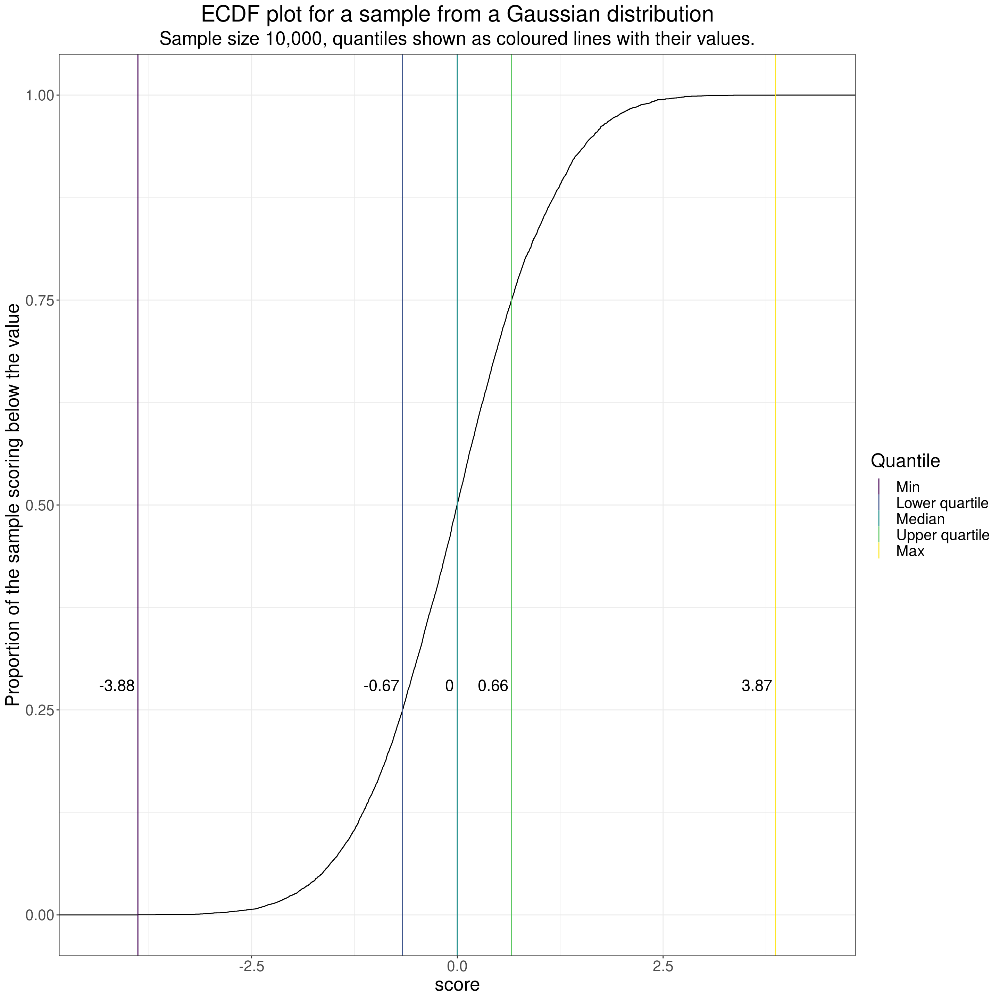
That shows the typical S shaped (“sigmoid”) shape of the ECDF for a sample from a Gaussian distribution. As it’s a very large (by therapy standards!) sample of n = 10,000 the curve is pretty smooth and the observed median was 0.00. I have marked that with a vertical line and the observed value as I have for some other quantiles, those for 0 (the minimum), .25 (the lower quartile), .75 (the upper quartile) and the maximum.
Distributions have very different shapes. Here’s another large sample, this time from a “rectangular” distribution, i.e. one where all possible values are equally probable. Here’s an example for a dataset in which scores between 0 and 4 are equiprobable.
runif(10000, 0, (34*4)) %>%
as_tibble() %>%
rename(score = value) %>%
mutate(score = round(score),
score = score / 34) -> tibEquiProb
tibEquiProb %>%
summarise(min = min(score),
median = median(score),
mean = mean(score),
sd = sd(score),
lquart = quantile(score, .25),
uquart = quantile(score, .75),
max = max(score)) -> tibEquiProbStats
tibEquiProbStats %>%
select(min, lquart, median, uquart, max) %>%
pivot_longer(cols = min:max) %>%
rename(Quantile = name) %>%
mutate(Quantile = ordered(Quantile,
levels = c("min", "lquart", "median", "uquart", "max"),
labels = c("Min", "Lower quartile", "Median", "Upper quartile", "Max"))) -> tibEquiProbStatsLong
ggplot(data = tibEquiProb,
aes(x = score)) +
stat_ecdf() +
geom_vline(data = tibEquiProbStatsLong,
aes(xintercept = value, colour = Quantile)) +
geom_text(data = tibEquiProbStatsLong,
aes(label = round(value, 2),
x = value,
y = .28),
size = 6,
nudge_x = -.04,
hjust = 1) +
xlim(c(-0.1, 4.1)) +
ylab("Proportion of the sample scoring below the value") +
ggtitle("ECDF plot for a sample from rectangular distribution",
subtitle = "Sample size 10,000, quantiles shown as coloured lines with their values.")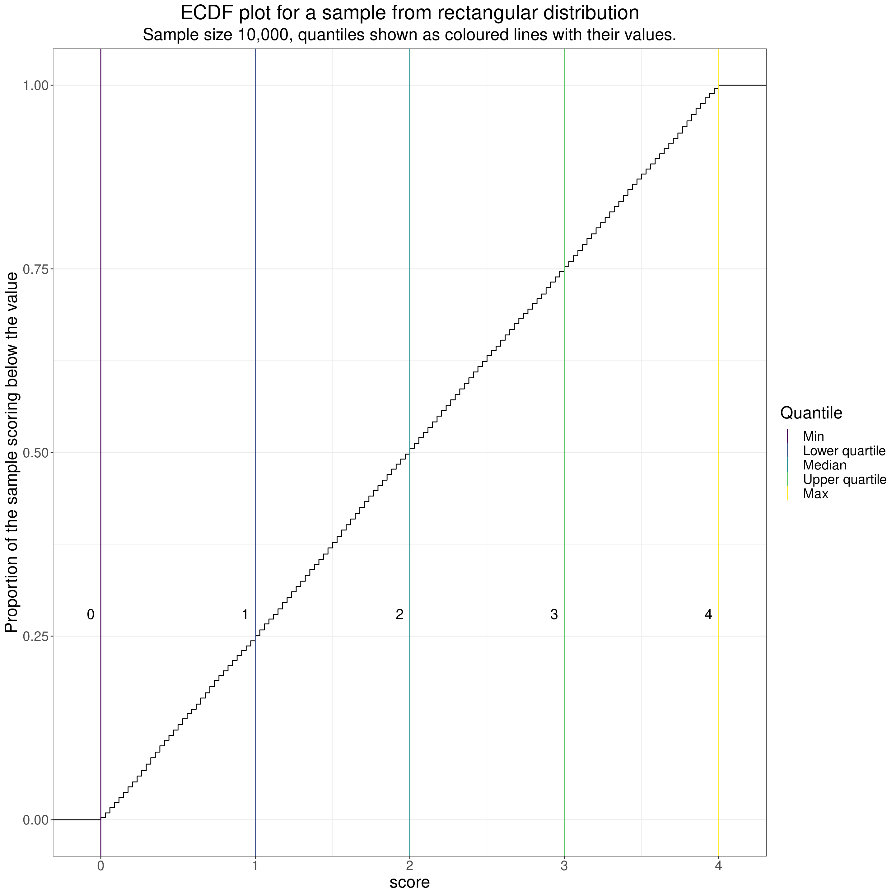
Again, because the sample size is large, the line is very smooth but now very straight, reflecting the equiprobable scores. The scores there are actually discrete (as of course all values in digital computers are). These were created using the model of CORE-OM scores assuming no omitted items and actually have values from 0, through 1/34 = 0.02941176, 2/34 = 0.05882353, and so on through to 4 - 2/34 = 3.941176, 4 - 1/34 = 3.970588, 4. As you can see, the discrete values are just visible as small steps on the ECDF. (With a dataset of 10,000 all 137 possible scores appeared in the data, that of course wouldn’t be true for smaller datasets and couldn’t be true for n < 137).
ECDFs can be computed for counts but then the curves, as with the discrete CORE-OM scores above, become steps as the numbers must go up as integers. I couldn’t think of a sensible example from MH interventions but this is assuming a service runs median/large groups of size 48 and has a 22% non-attendance rate at any group and shows what the number of clients absent at any one group would look like.
rbinom(10000, 48, .22) %>%
as_tibble() %>%
rename(nAbsent = value) -> tibCount
tibCount %>%
summarise(min = min(nAbsent),
median = median(nAbsent),
mean = mean(nAbsent),
sd = sd(nAbsent),
lquart = quantile(nAbsent, .25),
uquart = quantile(nAbsent, .75),
max = max(nAbsent)) -> tibCountStats
tibCountStats %>%
select(min, lquart, median, uquart, max) %>%
pivot_longer(cols = min:max) %>%
rename(Quantile = name) %>%
mutate(Quantile = ordered(Quantile,
levels = c("min", "lquart", "median", "uquart", "max"),
labels = c("Min", "Lower quartile", "Median", "Upper quartile", "Max"))) -> tibCountStatsLong
ggplot(data = tibCount,
aes(x = nAbsent)) +
stat_ecdf() +
geom_vline(data = tibCountStatsLong,
aes(xintercept = value, colour = Quantile)) +
geom_text(data = tibCountStatsLong,
aes(label = round(value, 2),
x = value,
y = .28),
size = 6,
nudge_x = -.04,
hjust = 1) +
# xlim(c(-0.1, 4.1)) +
ylab("Proportion of the sample scoring below the value") +
ggtitle("ECDF plot of number of people not attending any one group (group size 48, probability absent .22)",
subtitle = "Sample size 10,000, quantiles shown as coloured lines with their values.")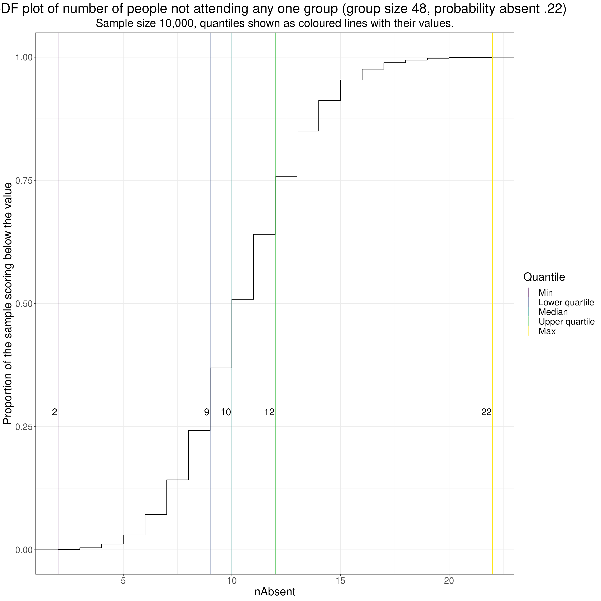
You can see how that distribution (a binomial) has the quartiles close either side of the median.
Apart from steps and lost smoothness in the ECDF caused by the scores being counts or scores on a fairly limited range of possible scores, e.g. for short questionnaires with binary or short ordinal responses, the other thing that affects the smoothness of ECDF curves is dataset size. This goes back to the samples from the Gaussian distribution but shows three different dataset sizes.
tibGauss %>%
group_by(n) %>%
summarise(min = min(score),
median = median(score),
mean = mean(score),
sd = sd(score),
lquart = quantile(score, .25),
uquart = quantile(score, .75),
max = max(score)) -> tibGaussStats
tibGaussStats %>%
select(n, min, lquart, median, uquart, max) %>%
pivot_longer(cols = min:max) %>%
rename(Quantile = name) %>%
mutate(Quantile = ordered(Quantile,
levels = c("min", "lquart", "median", "uquart", "max"),
labels = c("Min", "Lower quartile", "Median", "Upper quartile", "Max"))) -> tibGaussStatsLong
ggplot(data = tibGauss,
aes(x = score)) +
facet_wrap(facets = vars(n),
ncol = 1) +
stat_ecdf() +
geom_vline(data = tibGaussStatsLong,
aes(xintercept = value, colour = Quantile)) +
geom_text(data = tibGaussStatsLong,
aes(label = round(value, 2),
x = value,
y = .28),
nudge_x = -.04,
hjust = 1) +
ylab("Proportion of the sample scoring below the value") +
ggtitle("Faceted ECDF plot for three samples from Gaussian distribution",
subtitle = "Sample sizes 100, 1,000 and 10,000, quantiles shown as coloured lines with their values.")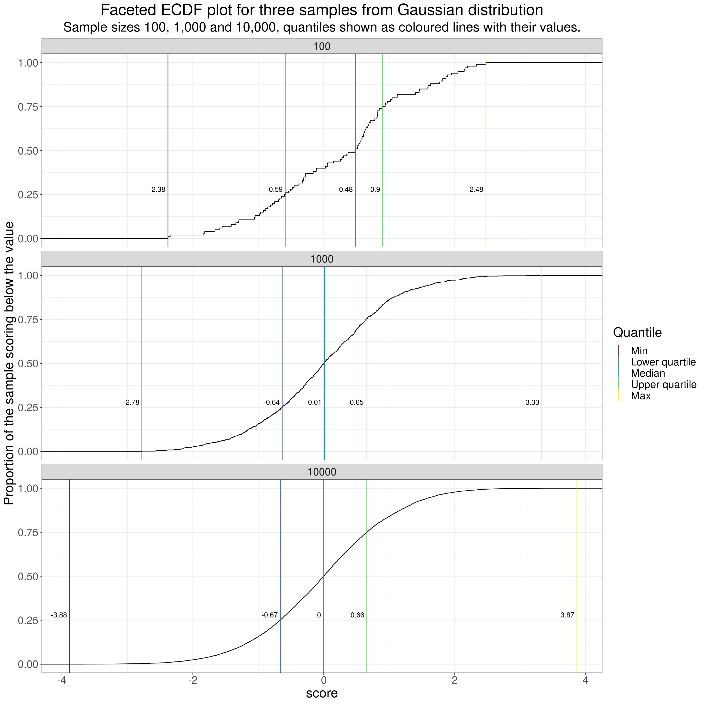
I’ve facetted there (by rows) for three dataset sizes: 100, 1,000 and 10,000.
A few pretty obvious comments on the impact of sample size when in the classical model of random sampling from an infinitely large population. These impacts are visible in all those distribution plots above.
tibGaussStats %>%
select(n, lquart, median, uquart) %>%
pivot_longer(cols = -n) %>%
mutate(value = round(value, 4),
proportion = case_when(
name == "lquart" ~ .25,
name == "median" ~ .5,
name == "uquart" ~ .75),
popVal = qnorm(proportion),
popVal = round(popVal, 4)) %>%
pivot_wider(names_from = n, names_prefix = "n", values_from = value) %>%
flextable() %>%
autofit()name | proportion | popVal | n100 | n1000 | n10000 |
|---|---|---|---|---|---|
lquart | 0.25 | -0.6745 | -0.5901 | -0.6359 | -0.6652 |
median | 0.50 | 0.0000 | 0.4837 | 0.0080 | -0.0019 |
uquart | 0.75 | 0.6745 | 0.9004 | 0.6453 | 0.6576 |
It can be seen there that the observed values for the quantiles get closer to the population values (popVal) the larger the sample.
… each has advantages and disadvantages. Let’s look at that.
The histogram is probably the plot most commonly used to show the shape of a distribution. Here it is for our Gaussian samples.
tibGauss %>%
group_by(n) %>%
summarise(min = min(score),
median = median(score),
mean = mean(score),
sd = sd(score),
lquart = quantile(score, .25),
uquart = quantile(score, .75),
max = max(score),
### and bootstrap mean (could have used parametric derivation as this is true Gaussian but I couldn't remember it!)
CI = list(getBootCImean(score, verbose = FALSE))) %>%
unnest_wider(CI) -> tibGaussStats
ggplot(data = tibGauss,
aes(x = score)) +
facet_wrap(facets = vars(n),
nrow = 3) +
geom_histogram(aes(y = after_stat(density))) +
geom_vline(data = tibGaussStatsLong,
aes(xintercept = value, colour = Quantile)) +
ylim(c(0, .6)) +
ylab("Count") +
ggtitle("Faceted histogram for three samples from Gaussian distribution",
subtitle = "Sample sizes 100, 1,000 and 10,000")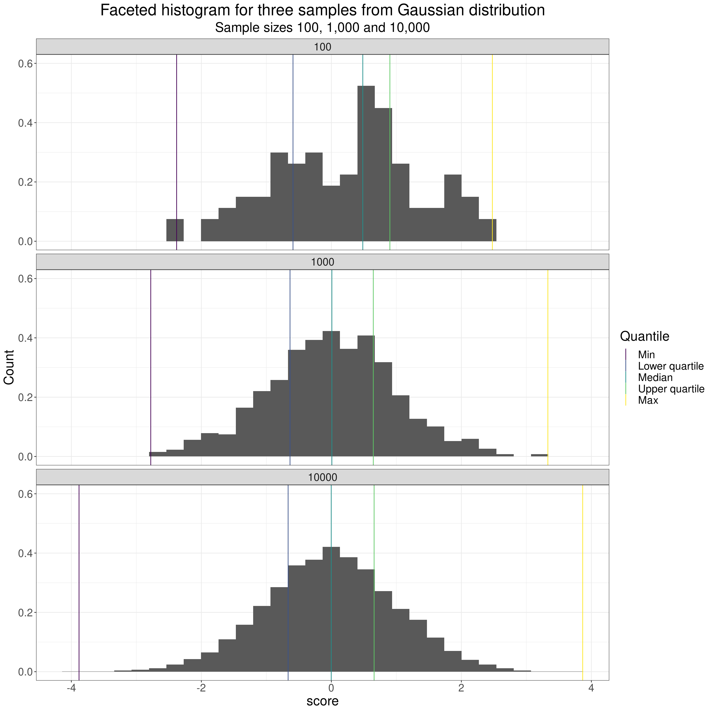
Hence the famous name: “bell-shaped distribution” for the Gaussian distribution. One nice thing about the Gaussian distribution is that it is completely defined by two “parameters” (values in the population): the mean and standard deviation (SD). That is to say that from those two statistics (the mean and SD values observed in the sample) you can fit the distribution you believe the population has given those sample values. Like this!
tibGaussStats %>%
mutate(label1 = paste0("mean = ", round(mean, 3), "\n",
"sd = ", round(sd, 3))) -> tmpTib
### I thought I could use geom_function() to map the inplied population density curves to the faceted plots but geom_function() isn't facet aware so
tibGaussStats %>%
select(n, mean, sd) %>%
rowwise() %>%
mutate(x = list(seq(-4, 4, .05))) %>%
ungroup() %>%
unnest_longer(x) %>%
mutate(fitted = dnorm(x, mean, sd)) -> tibFitted
ggplot(data = tibGauss,
aes(x = score)) +
facet_wrap(facets = vars(n),
nrow = 3) +
geom_histogram(aes(y = after_stat(density))) +
geom_vline(data = tmpTib,
aes(xintercept = mean),
colour = "red") +
geom_line(data = tibFitted,
aes(x = x, y = fitted),
colour = "blue",
linewidth = 1.5) +
geom_text(data = tmpTib,
aes(label = label1),
x = -4,
y = .59,
hjust = 0) +
ylim(c(0, .6)) +
ylab("Density") +
ggtitle("Faceted histogram for three samples from Gaussian distribution",
subtitle = "Sample sizes 100, 1,000 and 10,000, sample mean in red\nFitted (implied) population distribution in blue")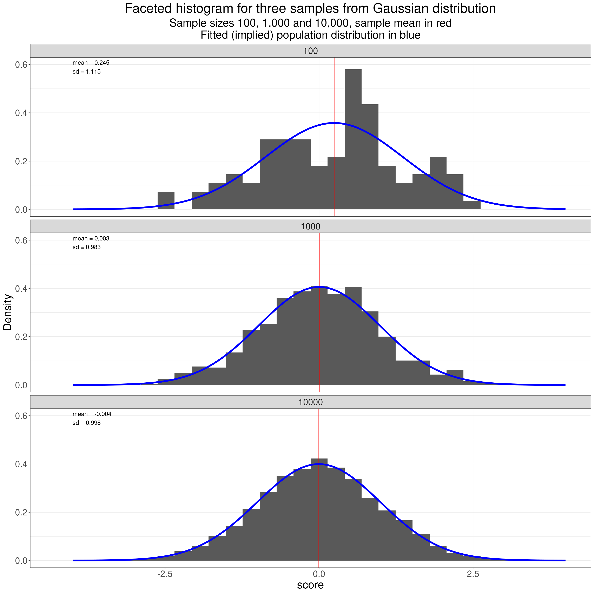
That shows how the observed distributions get closer to the population distribution as the dataset size increases.
Violin plots are increasingly used in place of histograms. Probably some of that is “look how modern we are!” but they have the great advantage over histograms that it is easy to plot a number of distributions side by side and eyeball if they look similar or different in shape. Violin plots use a sort of smoothed histogram rotated through ninety degrees and mirrored to give a nice way of comparing different distributions, here the three different samples.
tibGauss %>%
mutate(x = 1) -> tmpTibGauss
ggplot(data = tmpTibGauss,
aes(x = 1, y = score)) +
facet_wrap(facets = vars(n),
nrow = 3) +
geom_violin(fill = "grey80") +
# geom_jitter(width = .35, height = 0,
# alpha = .1,
# colour = "grey40") +
geom_hline(data = tmpTib,
aes(yintercept = mean),
colour = "red") +
geom_text(data = tmpTib,
aes(label = label1),
x = .6,
y = 3.75,
hjust = 0) +
ylab("Scores") +
ggtitle("Faceted violin plot with jittered observations for three samples from Gaussian distribution",
subtitle = "Sample sizes 100, 1,000 and 10,000, sample mean in red")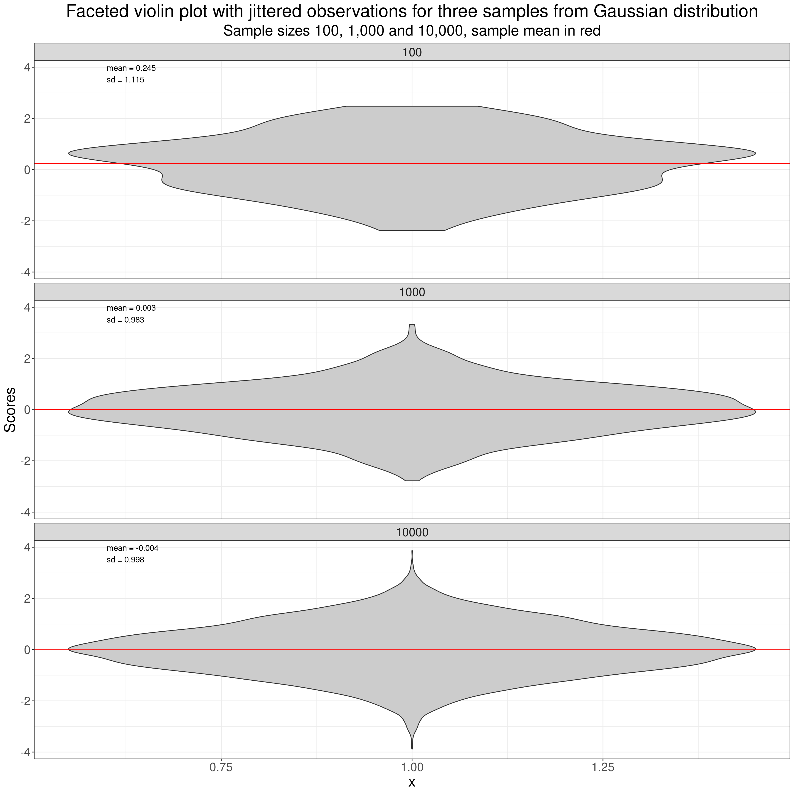
Another thing that is easier to do with violin plots than with histograms (though perfectly possible with histograms too with some trickery) is to put individual scores onto the plot as I have done here.
tibGauss %>%
mutate(x = 1) -> tmpTibGauss
ggplot(data = tmpTibGauss,
aes(x = 1, y = score)) +
facet_wrap(facets = vars(n),
nrow = 3) +
geom_violin(fill = "grey80") +
geom_jitter(width = .35, height = 0,
alpha = .2,
colour = "grey40") +
geom_hline(data = tmpTib,
aes(yintercept = mean),
colour = "red") +
geom_text(data = tmpTib,
aes(label = label1),
x = .6,
y = 3.75,
hjust = 0) +
ylab("Scores") +
ggtitle("Faceted violin plot with jittered observations for three samples from Gaussian distribution",
subtitle = "Sample sizes 100, 1,000 and 10,000, sample mean in red")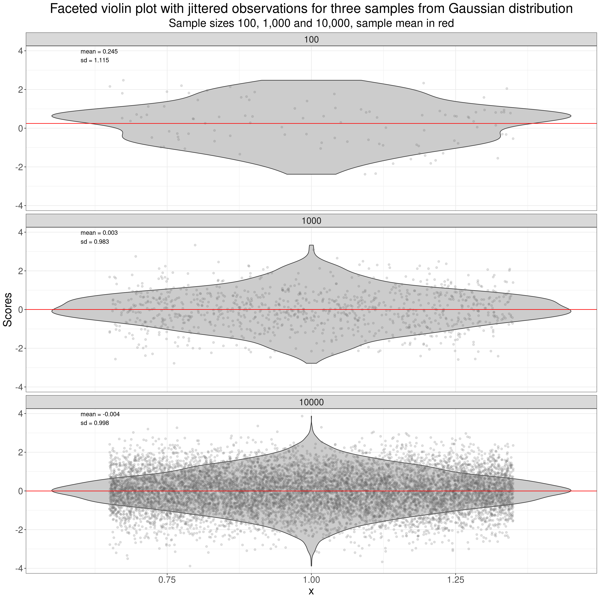
That used vertical “jittering” of the points to spread them out vertically (as a point can’t have a value on the y axis but does have a score value on the x-axis.) More on jittering in the Rblog at handling overprinting.
One more way of plotting a distribution: the boxplot, here again I’ve added jittered points for the individual data points. The boxplot brings us back to the simplest quantiles OK, as the box in the typical boxplot is defined by three quantiles: the median for the belt in the box, and the quartiles for the lower and upper limits of the box. The median is the score (not necessarily present in the data) that would bisect the data into two equal sized halves so it’s the value such that half the observed values lie below it and half lie above it. The lower quartile is the value such that a quarter of the observed values lie below it and three quarters above it, the upper quartile is the value such that three quarters of the sample lie below it and one quarter above it.
ggplot(data = tmpTibGauss,
aes(x = 1, y = score)) +
facet_wrap(facets = vars(n),
nrow = 1) +
geom_boxplot(notch = TRUE,
varwidth = TRUE,
fill = "grey80") +
geom_jitter(width = .35, height = 0,
alpha = .05,
colour = "grey40") +
geom_hline(data = tmpTib,
aes(yintercept = mean),
colour = "red") +
geom_text(data = tmpTib,
aes(label = label1),
x = .6,
y = 3.75,
hjust = 0) +
ylab("Scores") +
ggtitle("Faceted boxplot with jittered observations for three samples from Gaussian distribution",
subtitle = "Sample sizes 100, 1,000 and 10,000, sample mean in red")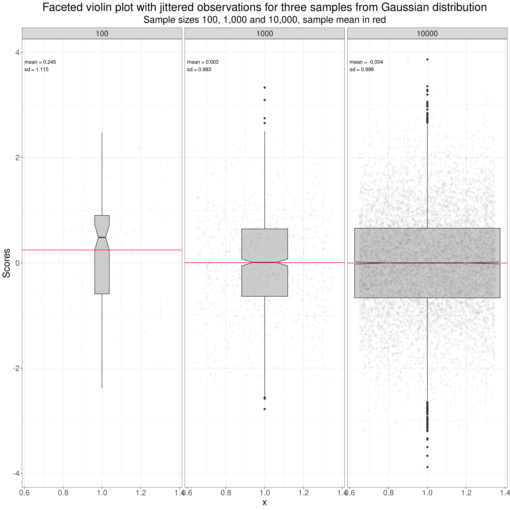
These are all really names for the same things but quantiles are generally mapped to probabilities (from zero to one) and percentiles to probabilities as percentages (from 0% to 100%). There are also deciles: i.e. 0%, 10%, 20% … 80%, 90% and 100%.
| Quantile | Quartile | Percentile (a.k.a. centile) |
|---|---|---|
| .25 | lower | 25% |
| .50 | median | 50% |
| .75 | upper | 75% |
I don’t think I’ve ever seen this done but one way to put the individual data onto an ECDF is to add a “rug” to the x (score) axis. A rug adds a mark, like the threads at the edge of a rug on the floor to mark the individual points, like this.
ggplot(data = tibGauss,
aes(x = score)) +
facet_wrap(facets = vars(n),
ncol = 1) +
stat_ecdf() +
geom_vline(data = tibGaussStatsLong,
aes(xintercept = value, colour = Quantile)) +
geom_rug(alpha = .3) +
geom_text(data = tibGaussStatsLong,
aes(label = round(value, 2),
x = value,
y = .28),
size = 6,
nudge_x = -.04,
hjust = 1) +
xlim(c(-4.4, 4.4)) +
ylab("Proportion of the sample scoring below the value") +
ggtitle("ECDF plot for a sample from a Gaussian distribution",
subtitle = "Sample size 10,000, quantiles shown as coloured lines with their values.")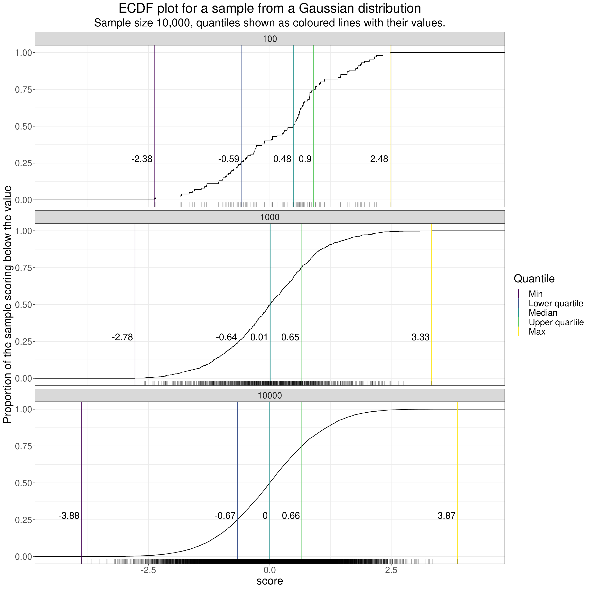
That’s fine for smaller n but you can see that when the n gets up to 10,000 or even 1,000 the overprinting pretty much removes the mapping to the individual data. (That’s true even adding transparency to the rug marks as I have there. See here for a bit more on using transparency with most R ggplot plots.)
I think this next plot, which uses a bit of R to create a sort of “histogram rug” (“historug” or “histogrug”?) might be a way to handle the challenge of reminding us of the individual scores when creating ECDF plots though I think purists will say, rightly, that it’s starting to muddle interpretation of the y axis as the labels on the y axis are correct for the ECDF but meaningless for the histogrug marks. Perhaps I have to accept that I go too far trying to reveal multiple aspects of a dataset in one plot!
tibGauss %>%
mutate(score = round(score, 1)) %>%
group_by(n, score) %>%
summarise(count = n()) %>%
ungroup() %>%
mutate(perc = 2 * count / n) %>%
ungroup() -> tmpTib
ggplot(data = tibGauss,
aes(x = score)) +
facet_wrap(facets = vars(n),
ncol = 1) +
stat_ecdf() +
geom_vline(data = tibGaussStatsLong,
aes(xintercept = value, colour = Quantile)) +
geom_bar(data = tmpTib,
aes(x = score, y = perc),
stat = "identity") +
geom_text(data = tibGaussStatsLong,
aes(label = round(value, 2),
x = value,
y = .28),
size = 6,
nudge_x = -.04,
hjust = 1) +
xlim(c(-4.4, 4.4)) +
ylab("Proportion of the sample scoring below the value") +
ggtitle("ECDF plot for a sample from a Gaussian distribution",
subtitle = "Sample size 10,000, quantiles shown as coloured lines with their values.")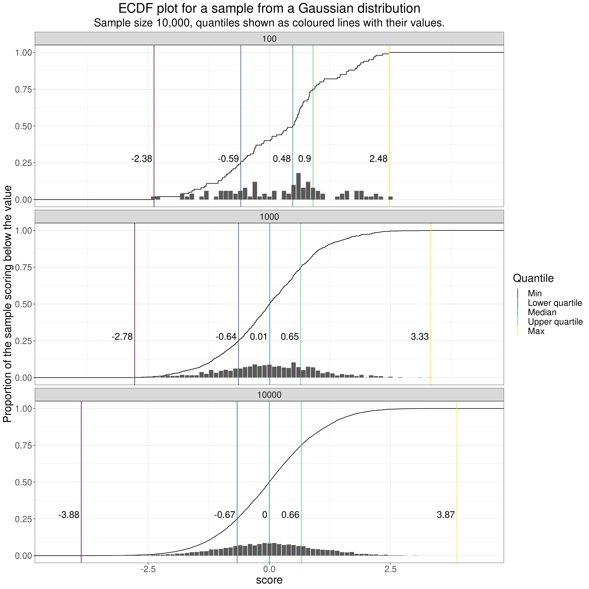
However, that brings me back to a key issue.
One great thing about all of these plots describing the shapes of distributions is that they move us away from oversimplifying summary statistics, typically just the mean and all of the ECDF, violin plot and boxplot can alert us that the distribution is not Gaussian and so can’t just be summarised by the mean and SD.
The issue of superimposing individual scores on these plots is about not just moving from simplifications to distributions’ shapes but also trying to keep individual data in mind.
One huge issue in MH/therapy work is that we have to be interested both individuals but also to be aware of aggregated data: to be able to take a population health and sometimes a health economic viewpoint on what our interventions offer in aggregate. However, I am sure that quantitative methods too often lose sight of individuals’ data. There are no simple and perfect ways to be able to think about both individual and about aggregated data and no perfect ways to map individual data to large dataset data.
I have tried to be pedantic and use the words “population” and “sample” when I’m talking about simulation in which maths and computer power make it easy to create “genuine” samples from infinitely large populations (actually to simpulate them). Otherwise I’ve used “dataset” instead of “sample” as I think that with MH/therapy data we’re pretty much never in possession of truly random samples from defined populations in our work. The “random-sample-from-population” model is a great way to help us understand aggregated data and often it’s the best we have when trying to generalise from small datasets. By using “dataset” not “sample” and by emphasizing the importance of looking at distributions and of trying to keep individual data in mind I’m not trying to overthrow group aggregate summary statistical methods, just trying to stop us overvaluing what we get from those models.
Text and figures are licensed under Creative Commons Attribution CC BY-SA 4.0. The figures that have been reused from other sources don't fall under this license and can be recognized by a note in their caption: "Figure from ...".